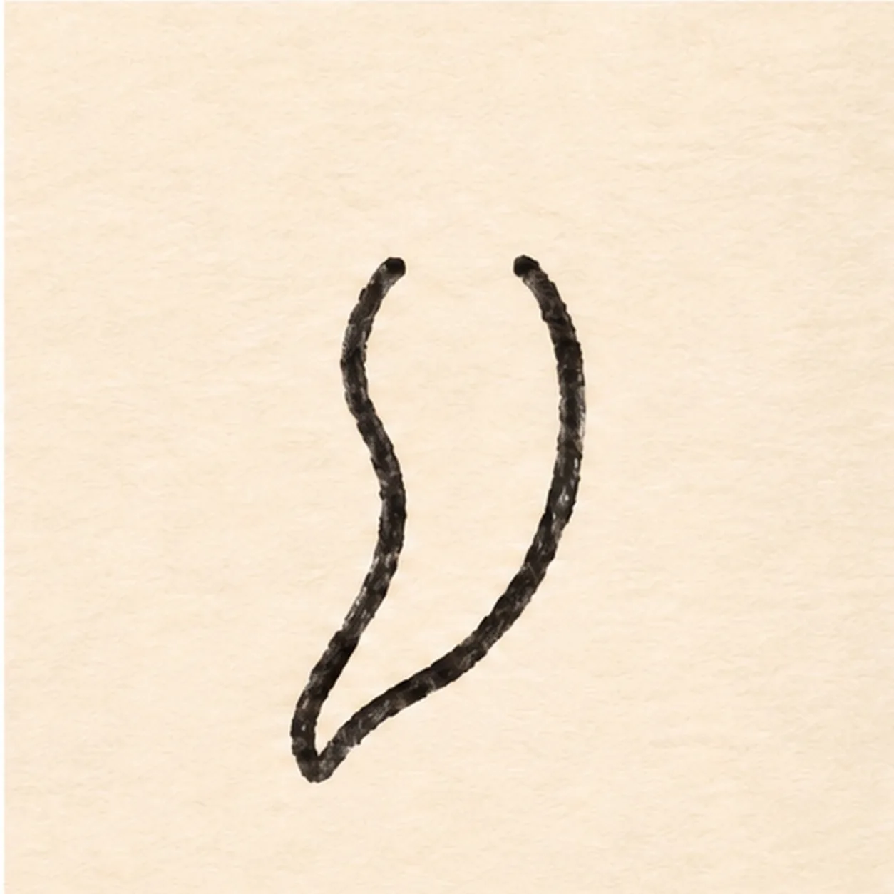
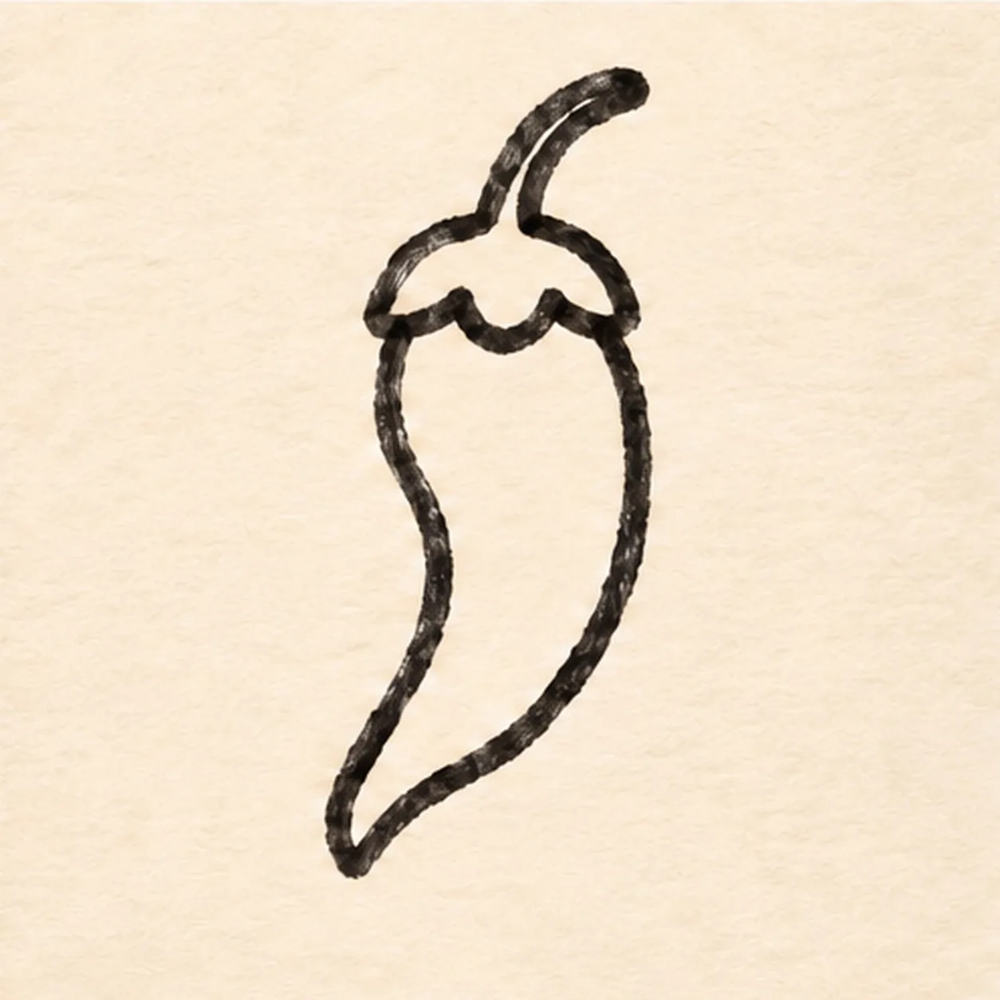
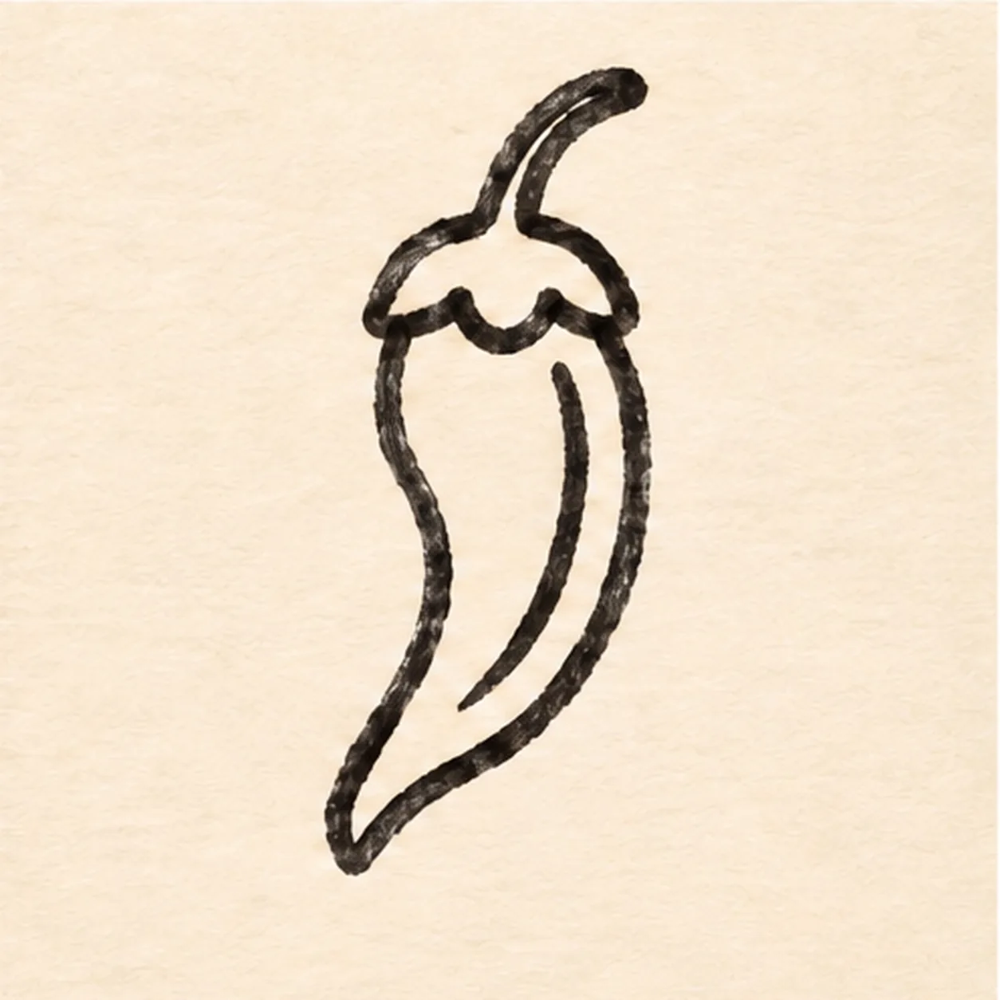
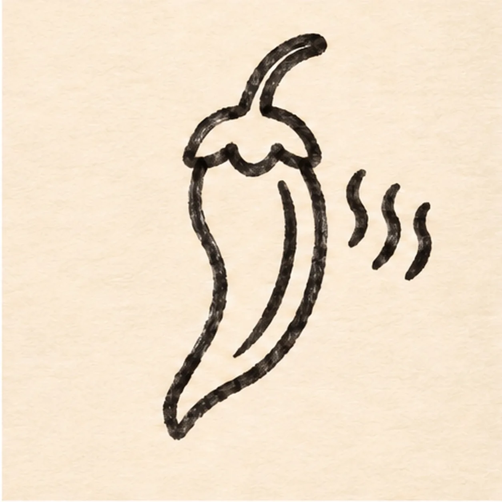
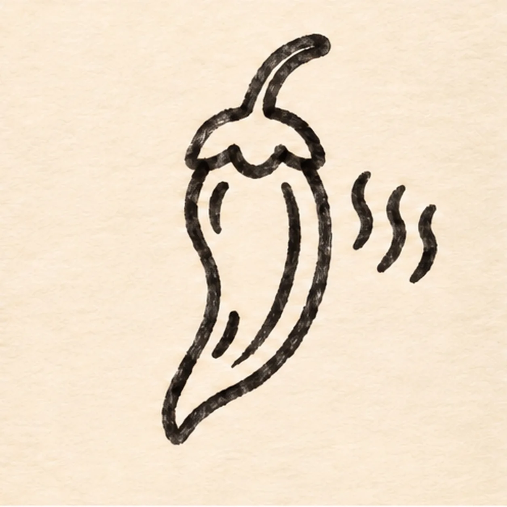

Marker ready?
Let's draw a cartoon chili pepper
Treat this as one playful practice round: sketch the idea loosely, simplify the shapes, then commit with confident marker outlines and bright fills.
-
01

Shape the curved pepper
With black felt tip, draw one long tapering chili body that curves down to the left. Leave a narrow gap at the thick upper end for the cap.
Marker tip: Leave the top gap for the cap.
-
02

Attach the cap and stem
Close the upper gap with a small three-lobed cap, then grow one short curved stem from its center.
Marker tip: Connect the stem to the cap, not the body side.
-
03

Draw the inner ridge
Inside the right side of the pepper, draw one slender curved ridge that follows the outer bend without touching the tip.
Marker tip: Keep the ridge separate from the tip.
-
04

Add three heat waves
To the right of the pepper, draw three separate short wavy heat lines from top to bottom. Leave white space between them and the pepper.
Marker tip: Count three separate heat waves.
-
05

Leave two shine marks
Inside the pepper body, draw one short curved shine mark above the middle and another below it. Keep both separate from the inner ridge.
Marker tip: Keep both shine curves inside the body.
-
06
Color the hot pepper
Let the ink dry. Fill the existing pepper body vivid red and its cap and stem grassy green with broad streaky marker strokes. Keep both black shine curves and the three heat waves visible.
Marker tip: Color around the black marks rather than covering them.